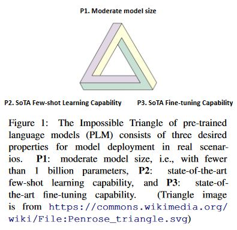

不可能三角[1] #
不可能三角 #

- 预训练模型之所以是划时代的进展，是它具备了中等尺寸（一张卡即可精调）和全任务SOTA的精调效果
- 而最近两年预训练模型都在往大尺寸发展，也就是具备了少样本效果，但他们的少样本效果依旧比不过中等模型的精调
弥补方法 #
- 优化size
- 对于减少模型尺寸，一条典型的故事线就是蒸馏。但其中仍存在两个问题：一是学生模型很难达到原始模型的效果，二是原始的大尺寸模型的推理效率太低
- 优化few-shot
- 对于提升少样本表现，数据增强是一个好办法，比如用无监督数据做自监督训练、或者基于其他模型生成一些伪样本，但这类方法依旧受限于现有标注样本的多样性，泛化性能提升有限
- fine-tuning
- 对于提升精调表现和效率（其实也偏少样本），最近一个比较火的故事是prompt，但这种方式对prompt的设计非常敏感，同时效果也很难超过目前的有监督SOTA
其他 不可能三角 #
分布式系统 #
- CAP理论
- C 一致性
- A 可用性
- P 分区
分布式存储 #
- RUM猜想
- Read-overhead
- Update-overhead
- Memory-overhead
范式 #
pretrain, finetune 范式[3] #
第三阶段范式
pretrain, prompt, predict 范式[3] #
第四阶段范式
总结 #
根据不可能三角形， pretrain, finetune 范式[3] 向pretrain, prompt, predict 范式[3]的迁移是受大模型大小的影响